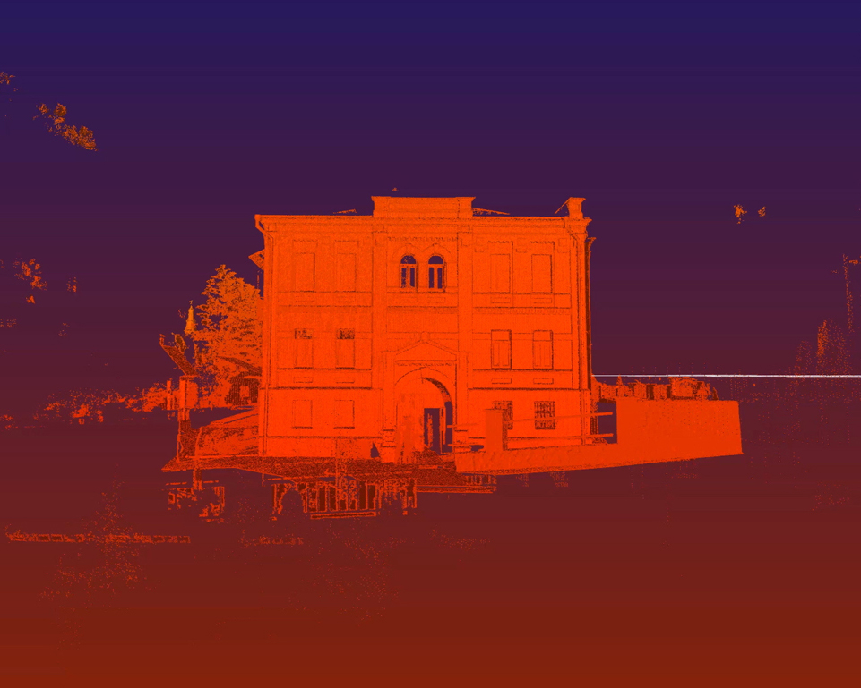

Meriem Bennani’s multichannel Party on the CAPS -2018- imagines a world reconfigured by biotechnology and teleportation.
Taking place on an isolated island in the Atlantic Ocean, it reflects on the physical and psychological displacement imposed on refugees and immigrants by states worldwide.
Displacement is also explored by Lawrence Abu Hamdan, whose work draws from the current increase of fortified borders, which has expanded from fifteen in 2000 to today’s sixty-three. Walled Unwalled -2018- connects this context with the concurrent discovery of muons, invisible cosmic particles that pass through surfaces impervious to X-rays, penetrating what were once regarded as established boundaries.
Bahar Noorizadeh, After Scarcity (still), 2018
Pan Daijing , photo by Raf Malsaut
Abu Hamdan’s ongoing exploration of physical and visual limits also manifested in the biennial’s opening party, which acted as a powerful statement regarding the pervasive contemporary regime of hypervisibility. At the club night hosted by Nkisi, presenting COLD WAR -Nkisi/John T. Gast-, Crystallmess, and the extraordinary Abyss X, the dominance of vision was erased by a darkened, opaque, smoked space punctuated by irregular laser lights and deep sounds.
The sensorial environment molded the audience into a single body, an anonymous mass whose empathy for one another organically counteracted the isolation key to the age of self-representation, and at the same time implemented a regime of invisibility. The enactment of such a fascinating, visceral kaleidoscope where vision was shaped by the movement of sound and bodies in space demonstrated the possibility of a shared moment of difference and otherness.
Aptly echoing the antimatter research undertaken nearby at CERN, the event enacted a passage from the reflection of the outside and the monetization of the inside to a shared refraction of the self, together expressing interiority in an environment that forcibly reverberated to the radiant sound of screens imploding.
Biennale de l’Image en Mouvement at Centre d’Art Contemporain, Genève